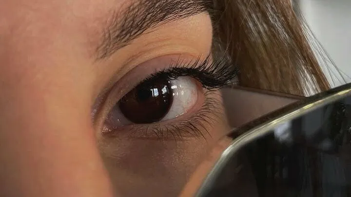
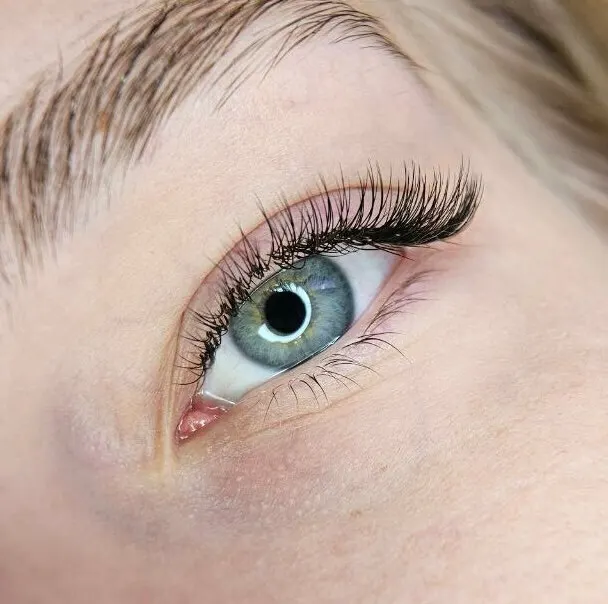
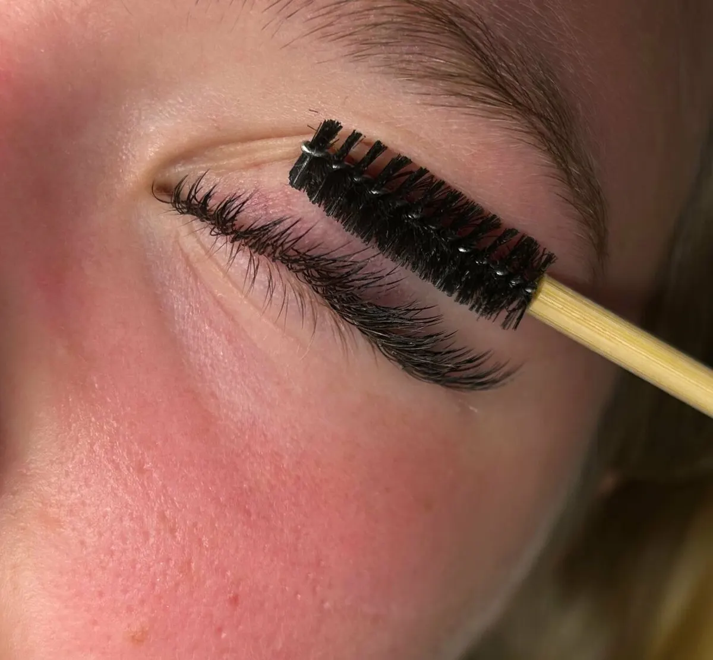
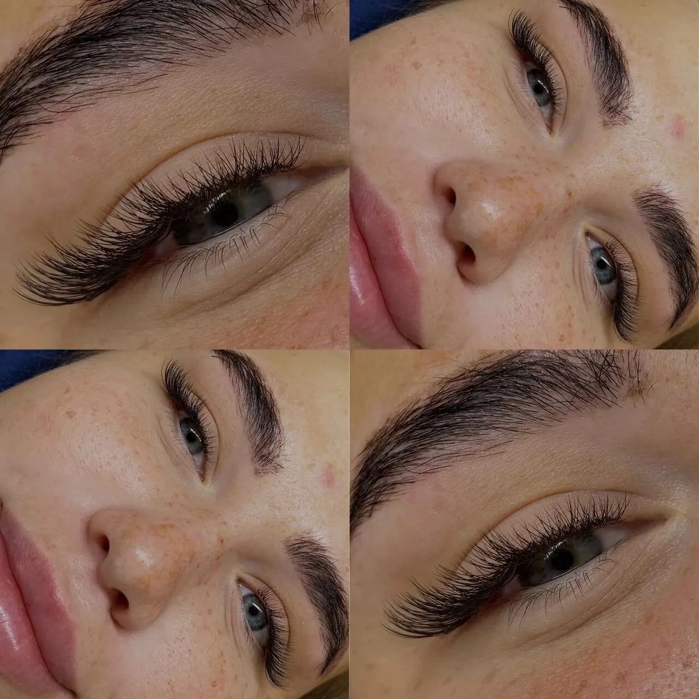

Студия ресниц и школа лэшмейкеров · Обнинске
Наращивание и ламинирование ресниц в Обнинске – студия и школа
Рейтинг 5,0 по 113 отзывам, награда «Хорошее место 2026». Носка больше месяца, сервис с чаем и подарками, обучение мастеров с сертификатом.
- Рейтинг 5,0 · 113 отзывов
- Награда «Хорошее место 2026»
- Ежедневно 10:00–22:00

Что входит в наращивание
Входит
- Подбор длины, изгиба и объёма под форму ваших глаз
- Анатомическая кушетка, плед и спокойная музыка
- Чай, кофе и угощения во время процедуры
- Памятка по уходу после наращивания
- Подарок после процедуры
Отдельно, если нужно
- Снятие чужой работы – 500 ₽
- Окрашивание ресниц – 500 ₽
Цены с карточки на Картах
Прайс обновлялся 23 октября. Если на карточке цена указана по-разному – точную стоимость назовём при записи.
Наращивание ресниц
- Классика1 ресница к 1, 1,5–2 часа2 500 ₽
- Объём 1,5Dлёгкий объём2 800 ₽
- Объём 2D3 000 ₽
- Объём 2,5D3 300 ₽
- Объём 3D3 500 ₽
- Наращивание уголков1 700 ₽
- Снятие ресниц20 минут500 ₽
Ламинирование и уход
- Ламинирование ресницизгиб и уход без наращивания2 500 ₽
- Окрашивание ресниц500 ₽
- Модель на наращиваниедля учениц курсов500 ₽
Продолжительность услуги – реальная: наращивание занимает 1,5–2 часа, об этом пишут клиентки в отзывах. Стоимость курсов обучения названа при записи – на карточке стоит заглушка.
Как проходит запись
- 01
Выбираете услугу, день и время
На сайте сообщение собирается само – отправляете его в WhatsApp в один клик.
- 02
Мастер подбирает ресницы под ваши глаза
Длина, изгиб и объём под форму глаз: клиентки пишут, что Валентина «просто волшебница» в подборе.
- 03
Процедура 1,5–2 часа на анатомической кушетке
Некоторые клиентки впервые засыпают на всём сеансе – настолько комфортно.
- 04
В конце – памятка по уходу и подарок
Всё объяснят про уход, дадут памятку, чтобы не пришлось запоминать, и угостят.
- 05
Ресницы носятся больше месяца
Об этом пишут в отзывах: «спустя месяц большая часть ресниц осталась на месте».



Что обещаем
Носка больше месяца
Повторяется в десятках отзывов: ресницы держатся месяц и дольше, без склеек.
Чай, кофе, плед и подарок
Сервис, за который студию хвалят отдельно от самой работы.
Памятка по уходу после процедуры
Чтобы не держать в голове, что нельзя делать первые дни.
Удобная анатомическая кушетка
Спина не устаёт, а часть клиенток впервые спит весь сеанс.
Отзывы с Яндекс.Карт
«Впервые наращивала ресницы, выбрала эту студию, и не разочаровалась. Уютно и красиво. Валентина отличный мастер, сделала очень красивые реснички с эффектом аниме. Не было никакого дискомфорта во время процесса. Я в восторге. Предлагала плед, на случай если будет холодно, чай и вкусняшки. Сервис на высшем уровне. Все подробно объяснила про уход, и дала памятку о том, что не рекомендуется делать после наращивания, безумно ценю, потому что я боялась забыть. За подарочек отдельное спасибо 💓»
Светлана Корсунская · 28 марта 2025
«Великолепно!! 😍Случайно нашла по оценкам эту студию и о божечки, Валентина просто волшебница! Сделала все быстро и профессионально, подобрала длину и форму, чтобы скорректировать мое нависшее веко. Спасибо, я в восторге от того, что можно не краситься и быть красивой!»
Мария Скопцова · 20 августа 2025
«Я пришла на курсы по наращиванию ресниц и поняла, что это моё! Преподаватель все доступно объясняет, много практических занятий. Я очень довольна обучением, и уже успела вернуть свои вложения.»
Полина · 12 февраля 2025
Отзывы с карточки на Яндекс.Картах, без правок.
Частые вопросы
Сколько носятся наращенные ресницы?
По отзывам клиенток – больше месяца: «спустя месяц большая часть ресниц осталась на месте», «иногда даже жалко снимать и переделывать».
Сколько длится процедура?
Наращивание – 1,5–2 часа, об этом пишут в отзывах. Ламинирование занимает меньше времени, точную длительность скажем при записи.
У вас есть обучение?
Да, студия ведёт базовые курсы наращивания (18 часов) и ламинирования (8 часов): обучение на живых моделях, сертификат с печатью, рассрочка. Стоимость и ближайшую дату старта назовём при записи.
Можно записаться онлайн?
Да: выберите услугу, день и время в виджете выше – сообщение соберётся само, останется отправить его в WhatsApp.
Запись на ближайшие дни
- Адрес
- Обнинск, ул. Курчатова, 41, студия 8, этаж 1, Обнинске
- Часы
- Ежедневно 10:00–22:00, по записи
- Телефон
- +7 (920) 881-39-92